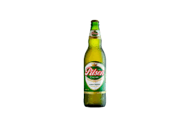

Su fundador, “Jack” Daniel, nació en septiembre de 1850. Si la fecha de 1850 es correcta, él podría haberse hecho destilador autorizado a la edad de 16 años, pues la destilería tiene como fecha de fundación 1866. Otros registros colocan su fecha de nacimiento el 5 de septiembre de 1846, y en su biografía de 2004 Blood & Whiskey: The Life and Times of Jack Daniel (Sangre y Whiskey: Vida y obra de Jack Daniel), el autor Peter Krass mantiene que según los registros la destilería no fue fundada hasta 1875. Daniel era hijo de una familia de trece hermanos, descendientes de galeses.
Ya que Jack Daniel nunca se casó y no tuvo hijos, tomó a su sobrino favorito,
Lem Motlow, bajo su protección. Lem tenía buena mano para los números y pronto se encargó de la contabilidad de la destilería. En 1907, debido a sus problemas de salud, Jack Daniel cedió la destilería a su sobrino. En 1911 Jack Daniel murió por septicemia a causa de una infección.
Según se dice, esta infección fue producida en su dedo gordo del pie dando
patadas a su caja fuerte al no poder abrirla. El caso extraño de la muerte de Jack Daniel se ganó un puesto en un episodio de la serie de televisión Extrañas formas de morir. Este incidente fue el asunto principal de un cartel publicitario usado en el Metro de Londres en enero de 2006, con el eslogan Moral: Never go to work early (Moraleja: nunca vaya a trabajar temprano).
Más tarde, cuando la compañía fue incorporada, lo hizo bajo el nombre Jack Daniel Distillery, Lem Motlow, Propietor, algo que se aprecia en la etiqueta de cualquier botella. Esto permitió a la compañía seguir fingiendo en la comercialización que Lem Motlow, que murió en 1947, sigue siendo el actual propietario, cuando realmente sólo se cita el nombre completo de la empresa. De la misma manera, la publicidad sigue diciendo que Lynchburg sigue teniendo 361 habitantes mientras que según el censo del año 2000 la población es de 5.740 personas.
En octubre de 2004 se anunciaba que los productos de Jack Daniel's disponibles desde entonces serían embotellados con 80 grados de alcohol (40% de alcohol por volumen), que es la cantidad más alta permitida en algunas jurisdicciones, simplificando el proceso de producción. Anteriormente, los productos de la famosa marca eran embotellados con 86 grados de alcohol, usando una etiqueta verde para el whisky de 80. Estas reducciones venían de la práctica anterior de embotellar el producto de 90 grados con etiqueta negra y el producto de 86 grados con etiqueta verde.
Más tarde Jack Daniel's elaboró una tercera variedad, Gentleman Jack (Caballero Jack), que desde su creación siempre ha sido embotellado con 80 grados. Este producto de calidad superpremium se fabrica de la misma manera que el resto de whiskeys de Tennessee, excepto porque después del envejecido y antes del embotellado es sometido nuevamente al Proceso del Condado Lincoln (filtración de carbón vegetal), es decir, tiene un doble filtrado en carbón.
La destilería situada en el 280 de la Carretera de Lynchburg es parte del American Whiskey Trail (La ruta del whiskey americano).
Fue catalogado en el Registro Nacional de Lugares Históricos el 14 de septiembre de 1972.

Historias de marcas: Hace 160 años un cervecero artesanal crea
una de las mayores tradiciones de todos los peruanos, Pilsen
Callao, la primera cerveza del Perú y actual simbolo de la amistad.
Si algo es costumbre para todos los peruanos, o bueno para la gran mayoría, es l
a necesidad de celebrar con una cerveza y junto a amigos. Aquell
a necesidad viene siendo cubierta desde hace 160 años, cuando un cerv
ecero artesanal alemán se estableció en Perú e inició uno de los más gran
des emprendimientos de los que todos los peruanos somos testigos: Pilsen Callao.
Entre derrotas y victorias
La historia de Pilsen Callao se remonta hace más de un siglo y medio, es
pecíficamente al 15 de octubre de 1863, cuando el alemán Federico Bindel
s decide fundar la Cervecería Pilsen, su primer emprendimiento en tierras peruanas.
Cinco años después, Bindels se une con Aloise Kieffer, un ciudadano fran
cés que gracias a su inversión permite la ampliación de la fábrica. Posteriormente
, al fallecer la cervecería es heredada a sus hijos. Sin embargo, luego de que un
lote de Pilsen se distribuyera en mal estado en 1994, la firma llamada en ese ento
nces Compañía Nacional de Cerveza S.A., decidió vender el 62% de sus acciones a su
principal competencia, Backus.